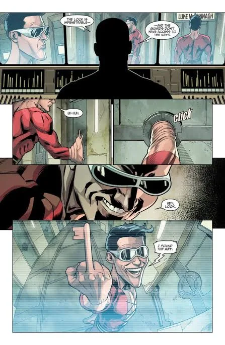
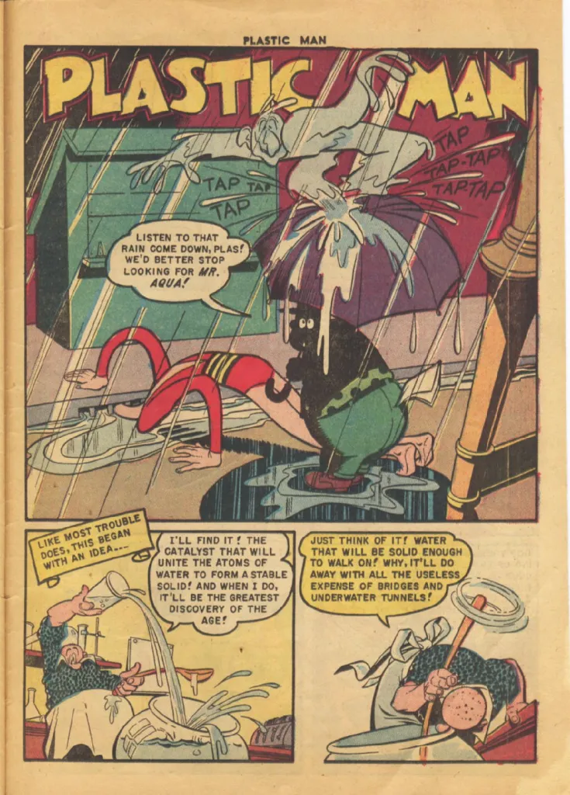
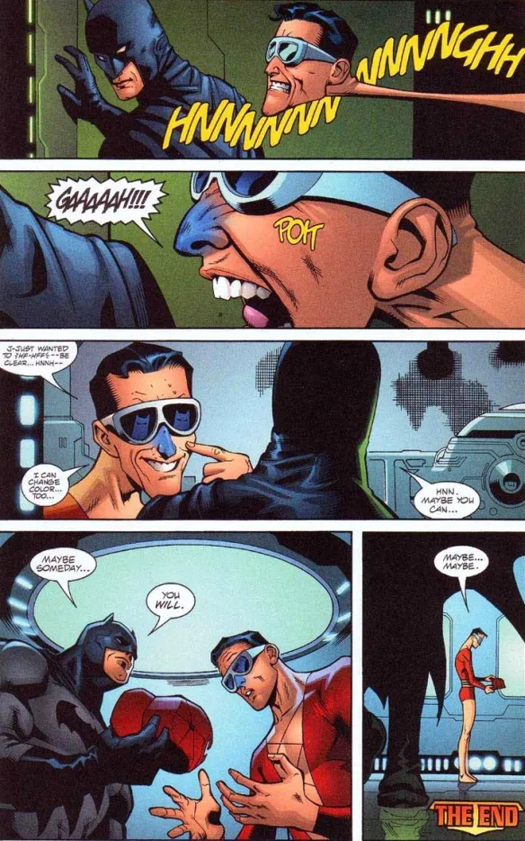

EL HÉROE MÁS RIDÍCULO DE DC ES TAMBIÉN EL MÁS PELIGROSO
(Y NADIE HABLA DE ELLO)

A primera vista, Plastic Man parece un chiste andante que se equivocó de editorial. Un tipo con un traje ridículo y gafas de sol que se estira para convertirse en una alfombra o un hidrante de incendios solo para hacer reír a la Liga de la Justicia. Pero detrás de esa fachada de bufón de oficina se esconde el personaje más absurdamente roto y letal de los cómics. Es momento de dejar de reírse de Eel O'Brian y empezar a temerle.
El mito de que la seriedad es equivalente al poder se cae a pedazos cuando analizas la anatomía y las capacidades de este ex-gángster. No es un héroe de segunda; es un arma de destrucción masiva con problemas de atención.

🧠 El cerebro indescifrable: Inmune a los dioses
En un universo donde villanos como Brainiac o Darkseid pueden esclavizar planetas enteros con solo un ataque mental, Plastic Man es completamente intocable. Al haber perdido su estructura orgánica humana, su cerebro ya no es biológico, sino una masa maleable de densidad cambiante. ¿El resultado? Los telópatas más poderosos del planeta, incluidos Martian Manhunter o el mismísimo Maxwell Lord, no pueden leer su mente, controlarlo ni generarle ilusiones. Su psique es un caos elástico imposible de hackear.

💀 La inmortalidad biológica absoluta
A diferencia de Superman, que cae ante la kriptonita, o Wonder Woman, que envejece, Plastic Man ha superado la barrera de la vida y la muerte.
El castigo de la eternidad: En la icónica historia The Obsidian Age, Plastic Man fue destrozado en millones de pedazos y esparcido por el fondo del océano Atlántico. Pasó 3,000 años separado, consciente y congelado en el fondo del mar, para luego ser ensamblado y volver a la vida como si nada hubiera pasado.
Inmune a la física: No respira, no sangra, no tiene órganos vitales que apuñalar y puede alterar su masa molecular a voluntad para volverse tan denso como el diamante o tan delgado como un átomo. No hay prisión capaz de contenerlo ni veneno capaz de mermarlo.

🦇 El peor miedo de Batman
El argumento definitivo para cerrar bocas viene del hombre que tiene un plan de contingencia para matar a todo el universo: Batman. En los archivos confidenciales del Caballero de la Noche, Plastic Man es el único héroe de la Liga de la Justicia para el cual Bruce Wayne no tiene un plan de asesinato definitivo. Batman ha admitido públicamente que si Plastic Man perdiera la cordura y decidiera volverse villano, la Tierra estaría condenada. Lo único que mantiene al mundo a salvo es que Eel O'Brian prefiere contar chistes malos antes que gobernar el planeta.
EL VEREDICTO FINAL
Plastic Man es la genialidad de DC convertida en sátira. Mientras el mundo se derrite en debates aburridos sobre si Superman es más fuerte que Goku, el tipo de las mallas rojas y gafas oscuras puede imitar la forma de una bomba nuclear, resistir la magia y sobrevivir al fin del universo. Es el héroe más peligroso porque su poder no tiene límites lógicos, y nadie habla de ello simplemente porque el personaje prefiere actuar como un payaso. Ignorar su letalidad no es un error de diseño; es el analfabetismo de los lectores de cómics.
OTROS RUIDOS

Los héroes de cómic más políticos de la historia
Izquierda, antifascismo y derechos humanos.

Capitán América: La pesadilla de los nacionalistas
Steve Rogers, disidente político radical.

¿Por qué Damian Wayne es el mejor Robin?
El hijo de Batman que venció a su destino.